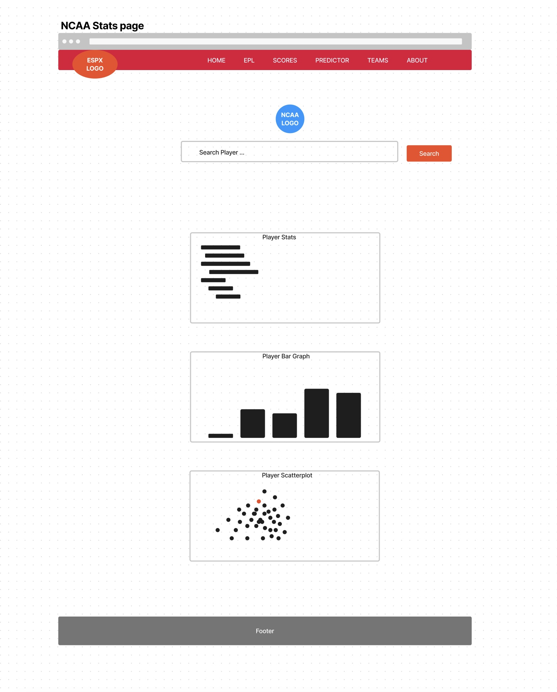

Light and Dark Mode Toggle
.png)
Design and Mockups
Critical Consideration of Strengths and Weaknesses
Strengths:
-
Contrast
Application: The use of contrasting colors in the navigation bar and buttons enhances visibility and directs user attention to important elements. The contrast between text and background makes the content easier to read.
Theory Relation: Using differing colors effectively guides users through the interface, improving the overall user experience.
-
Negative Space
Application: Effective use of negative space allows users to focus on specific content without feeling overwhelmed.
Theory Relation: The theory of negative space suggests that the space around elements is crucial for a clean design.
-
Font Choice and Hierarchy
Application: Complementary fonts contribute to brand identity, with clear hierarchy guiding users from headings to body text.
Theory Relation: Effective typography influences readability and user engagement.
-
Information Layout
Application: The logical layout facilitates easy navigation and quick understanding of statistics.
Theory Relation: Information architecture emphasizes the importance of organizing content logically.
-
Interactivity
Application: Interactive elements engage users and provide an immersive experience.
Theory Relation: User engagement improves through dynamic content.
Weaknesses:
-
Over-Reliance on Contrast
Issue: Overuse of bright colors may lead to visual strain for some users.
Theory Relation: Accessibility principles emphasize inclusivity and adherence to standards.
-
Insufficient Negative Space in Certain Areas
Issue: Cramped appearances in certain sections can hinder quick information processing.
Theory Relation: Cluttered designs can overwhelm users, leading to cognitive overload.
-
Font Legibility
Issue: Small text sizes may be challenging to read on devices, particularly for visually impaired users.
Theory Relation: Legibility is vital for effective communication.
-
Information Overload
Issue: Instances of information overload may occur without sufficient contextual guidance.
Theory Relation: Excessive data can hinder user comprehension.
-
Interactivity Limitations
Issue: Some interactive elements may not be optimized for all devices, particularly mobile.
Theory Relation: Responsive design ensures all features function seamlessly across devices.
Data-Driven Storytelling
The RNZ project excels in combining narrative elements with data-driven storytelling, enhancing effective communication in data journalism.
Narrative Integration
Effectiveness: The project introduces key concepts and contextual information, preparing users to engage with the data visualizations.
Importance of Narrative: By framing data within a story, the RNZ project helps users understand the real-world implications of the data.
Data Visualization Techniques
The RNZ project employs various visualization techniques to present complex ecological data.
Maps
Effective Example: An interactive map where users can hover over regions to see detailed information.
Bar Charts
Effective Example: Well-designed bar charts with consistent color schemes and clear labels.
Line Graphs
Effective Example: Clear and organized line graphs with distinct colors and consistent intervals.
Interactivity and User Engagement
Interactivity enhances user engagement and makes complex data more accessible.
Hover-Over Data Points
Effective Example: The RNZ project uses hover-over data points effectively, providing concise, relevant information.
Clickable Regions
Effective Example: Clickable regions on the map provide additional information seamlessly.
UI/UX Design Principles
The RNZ project exemplifies effective UI/UX design principles.
Consistency
Effective Example: Cohesive design elements guide users smoothly through the content.
Accessibility
Effective Example: The RNZ project ensures that information is accessible to a wider audience.
Responsiveness
Effective Example: The RNZ project adapts well to different screen sizes and devices.
Emotional Impact
The RNZ project’s design choices contribute significantly to the emotional tone and overall message.
Color Palette and Visual Tone
Effective Example: A muted, natural color palette evokes the fragility of ecosystems.
Use of Imagery
The effective use of images of endangered species evokes empathy and concern.
Chart Design
The scatter plot on the EFL page was created using the D3.js library.
Description: This is a mockup for the chart layout, visualizing teams' wins vs. performance in the 2022-23 season.
Design Mockup

Description: A comprehensive design mockup showing how different EPL statistics can be visualized.
Logo Design Section

Description: A preview of the logo design mockup.
Logo Design Section
Description: A preview of the logo design mockup.
Home Wireframe
Description: A preview of the home page wireframe design.
Landing Page Wireframe
Description: A preview of the ESPX dynamic landing page wireframe design.
EPL Teams Wireframe
Description: A preview of the EPL teams display wireframe design.
EPL Table Predictor
Description: A preview of the EPL table predictor page wireframe design.
EPL Page Wireframe
Description: A preview of the EPL page wireframe design.
EPL Transfer News Wireframe
Description: A preview of the EPL transfer news wireframe design.
Basketball Teams Wireframe
Description: A preview of the basketball teams wireframe design.
Basketball Scores Wireframe
Description: A preview of the basketball scores wireframe design.
Basketball News Wireframe
Description: A preview of the basketball news page wireframe design.
NCAA Stats Wireframe
Description: A preview of the basketball news page wireframe design.
NCAA Stats Wireframe
Description: A preview of the basketball news page wireframe design.
NCAA Stats Wireframe
Description: A preview of the basketball news page wireframe design.
Personal Reflection and Design Influence
My personal journey with sports, particularly soccer and basketball, has been a driving force behind the creation of my website. Growing up in South Africa, soccer was more accessible, with the English Premier League (EPL) being a major point of connection between me and my brothers. Video games like FIFA and Pro Evolution Soccer (PES) were my first introduction to soccer, and through constant competition with my brother, I became fascinated with the intricate aspects of the game; player stats, team rankings, transfers, and what makes a team excel.
This natural obsession with data, from top goal scorers to goal differences, has significantly shaped the data-driven visualizations I wanted to create for my website. The EPL became a visual centerpiece for this, and the website reflects my childhood fascination with soccer’s numbers and competitive dynamics. It also shows my desire to make those metrics accessible and meaningful to both casual fans and experts alike, much like ESPN does with their platform.
With basketball, the journey was different but no less meaningful. Growing up, basketball was difficult to follow due to lack of resources, such as reliable WiFi or televised games. However, through video games like NBA '08 and later moving to a school which offered basketball, I was able to immerse myself in the sport. I spent countless hours and megabytes watching highlights of my favourite players on YouTube, and watched in awe at the talent represented at the 2016 NBA Finals (between the Golden Stae Warriors and Cleveland Cavaliers) on DStv, studying stats like shot percentages and turnover-to-assist ratios, which shaped the way I view and engage with basketball. This deeply personal relationship with the game, born from limited resources but boundless passion, has driven me to create something meaningful, not just for myself, but for athletes, fans, and coaches alike who rely on this data to understand the sport better.
Style Guide and Color Palette
The style and color choices of my website are also reflective of my personal experiences and what I aimed to convey through the project. Inspired by ESPN, I wanted the website to feel professional, yet immersive, using visuals that captured the excitement of sports data.
Color Palette:
I opted for a palette that is bold and vibrant, using red, blue, black, and white as the dominant colors. These colors represent both soccer and basketball; red symbolizing the passion, time and energy (reflecting moments of intensity during games), blue representing trust and professionalism (reminiscent of team jerseys and official league colors), and black and white representing balance and contrast, bringing focus to the data presented on the page.
Typography:
I chose clean, sans-serif fonts that balance readability with the high-energy nature of sports. Fonts that are modern yet simple help users focus on the data without distraction, mirroring the way I wanted stats to be at the forefront of the user experience.
Design Elements:
I leaned heavily on iconography and team logos, using them not only as symbols of identity but also as points of interaction for users. The floating logos of various leagues, combined with minimalist backgrounds, create a dynamic yet intuitive user interface that reflects the energy and motion of the sports world. The design strikes a balance between modern sports websites and interactive elements, such as charts and search bars, which allow for exploration and personalization.
Design Goals
My main design goal was to make sports data engaging and accessible, much like how video games and televised sports did for me as a kid. I wanted users to experience the behind-the-scenes stats that make soccer and basketball more than just a game. I aimed to create visualizations that:
- Engage the audience by visually representing key metrics that fans, athletes, and coaches care about, like wins, goals, and player trades, through charts and interactive graphs.
- Promote understanding by breaking down complex data (such as shot percentages, player movements, or team rankings) into digestible and visually appealing components, much like ESPN does but through my personal lens.
- Incorporate narrative storytelling into the visualizations, where the data tells a deeper story about the teams and players. Whether it’s the heartbreak of a favorite player being traded or the excitement of a team climbing the ranks based on their goal-scoring abilities.
Struggles with APIs and Technical Limitations
While my vision was ambitious, I quickly realized that the technical side of implementing multiple APIs posed significant challenges. My original goal was to have highly interactive visualizations such as; showing where each goal was scored in a particular soccer game, or representing missed and made shots for basketball players over an entire season. These ideas were inspired by how I engage with sports, focusing on the finer details that influence a game’s outcome. However, despite these aspirations, I faced several roadblocks.
API Limitations:
Many of the sports APIs I worked with didn’t provide the level of granular data I needed. For instance, I couldn’t fully implement the idea of showing exact goal locations or shot charts due to a lack of available data points. This forced me to rethink my design approach.
Creative Compromises:
As a result, I had to settle for less creative but still innovative ways to present the data. For example:
- Instead of an interactive shot chart, I created an EPL chart that ranked teams based on wins and goals scored.
- I introduced a table predictor for the upcoming EPL season, where users can explore potential team rankings.
- I added a scores display for basketball leagues (NBA, WNBA, NCAA), ensuring fans had access to game results and trade news, even if the visual complexity wasn’t as high as I initially envisioned.
These solutions, while less intricate than my original plan, still maintain the core goal of making data engaging and informative. I embraced simpler yet effective visualizations, focusing on making the stats accessible and visually appealing.
Reflection on Achieving My Goals
Although I didn’t fully realize my original vision, the project still achieves my overarching goal of making sports data engaging. By blending personal experiences with a professional approach to design, I have created something that reflects my journey; from the kid obsessing over stats and game tactics, to the athlete who cares about the details that make or break a performance.
Through every struggle with APIs, I’ve learned the importance of adapting to constraints and using creative problem-solving to still achieve meaningful and impactful results. My final website, while not perfect, is a representation of my passion for sports and data, and it embodies everything I’ve come to love about both soccer and basketball; from the excitement of stats to the deeper narratives that make sports so compelling.
This reflection not only highlights my growth and understanding of sports data but also serves as a personal journey of pushing through challenges and adapting my vision in ways that still stay true to my passion for the game.